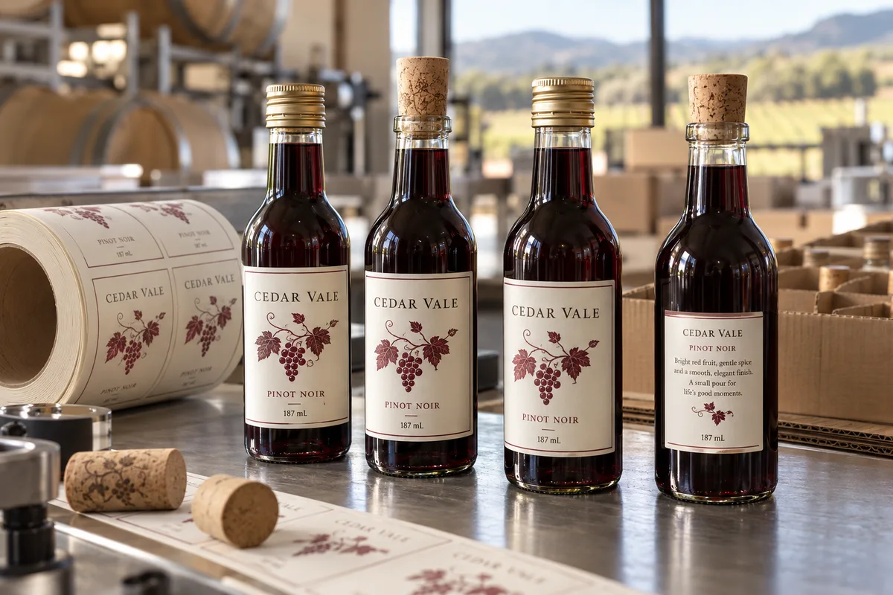

A smaller bottle changes the layout problem
On a 187 mL bottle, the shoulder and base consume a larger share of the glass than many designers expect. I would not reduce a 750 mL label in one click and send it to press. Start with the actual straight wall and a physical paper wrap. Decide which information belongs on the front, what can move to the back, and where a narrow seam is acceptable.
A composite gift-set buyer wants the mini bottle to look identical to the flagship 750 mL SKU. I would preserve the brand cues but rebuild the type hierarchy. The alternative is a lovely miniature that asks the buyer to read through a magnifier. That is not premium.
Make regulatory space before embellishment
For wine sold in the United States, TTB's wine FAQ specifically discusses adapting an approved label to a smaller container and notes minimum type-size requirements for mandatory information on containers of 187 mL or less. The actual approval path and final artwork need the winery's regulatory review; a printer should not substitute design taste for that decision.
The fictional Cedar Vale bottle photograph demonstrates scale and placement only. Its simplified front artwork is not a U.S. retail-compliance template. I would reserve the back or a second label for approved mandatory copy before adding foil, texture or a neck tag.
Paper, film and wet service are separate decisions
A textured paper can make a miniature gift bottle feel considered, especially when it remains dry. If these bottles will be chilled in ice or handled wet at events, test the chosen construction on filled bottles. A film face or wet-strength paper may be appropriate, but the adhesive also needs a real application and service trial. There is no universal "wine label" stock.
The most expensive surprise is a decorative face that looks good at approval but scuffs during carton packing. Handle a short trial exactly as the fulfillment team will, including inserts, partition rub and removal from the gift box.
Give the converter the complete set
Send the exact 187 mL bottle and closure, front and back usable-panel dimensions, approved text, target market, wet-service expectations, pack-out method, number of SKUs and order quantities. Ask for a print-size proof, not just a PDF zoomed to fit the screen.
When the brand wants a neck label as well, measure that zone separately; the neck tapers and may need its own shape. Keep the first trial about fit and legibility. Embellishment comes after those two questions are settled.
Our buying view
What we would decide first
Protect legibility and fit on the real 187 mL bottle. A real production sample can settle that question before a full printed roll is ordered.
Related buyer guides
Frequently asked questions
Can I shrink a 750 mL label for a 187 mL bottle?
Do not assume so. Rebuild the hierarchy on the actual bottle and review market-specific mandatory text size and placement.
Do mini wine bottles need separate front and back labels?
Often that is the clearest layout, but the final configuration depends on bottle geometry and the approved market-specific artwork.
Review your label specification
Send the real package, dimensions, order quantity, labeling stage, storage conditions and artwork. We can discuss a practical material and proof route.